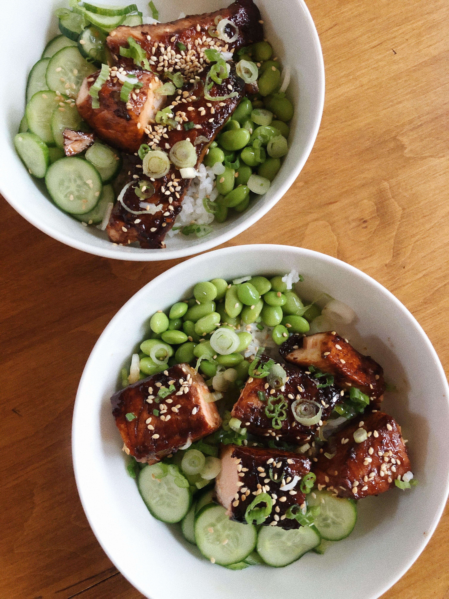
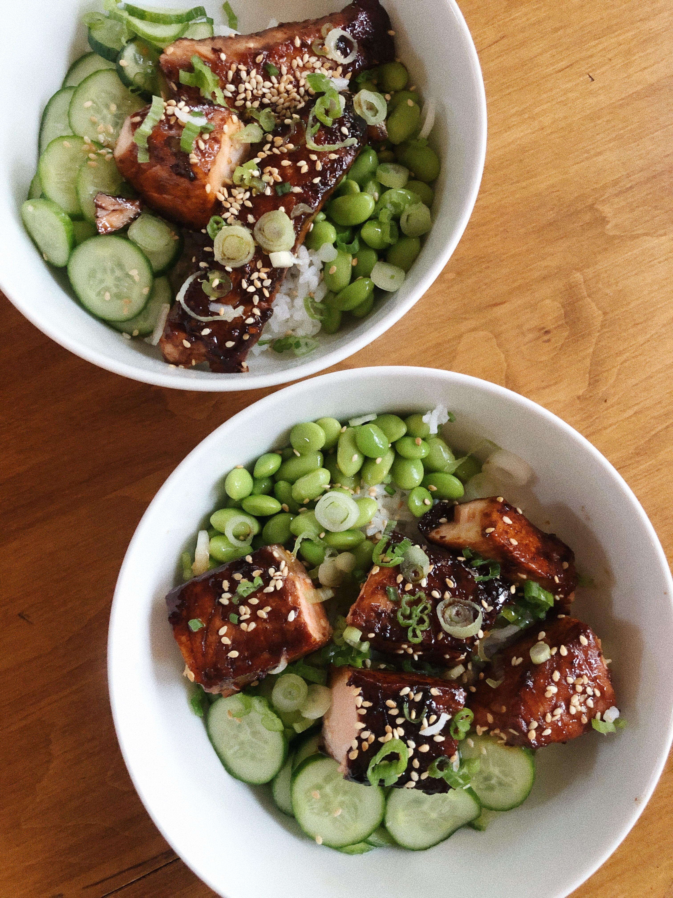
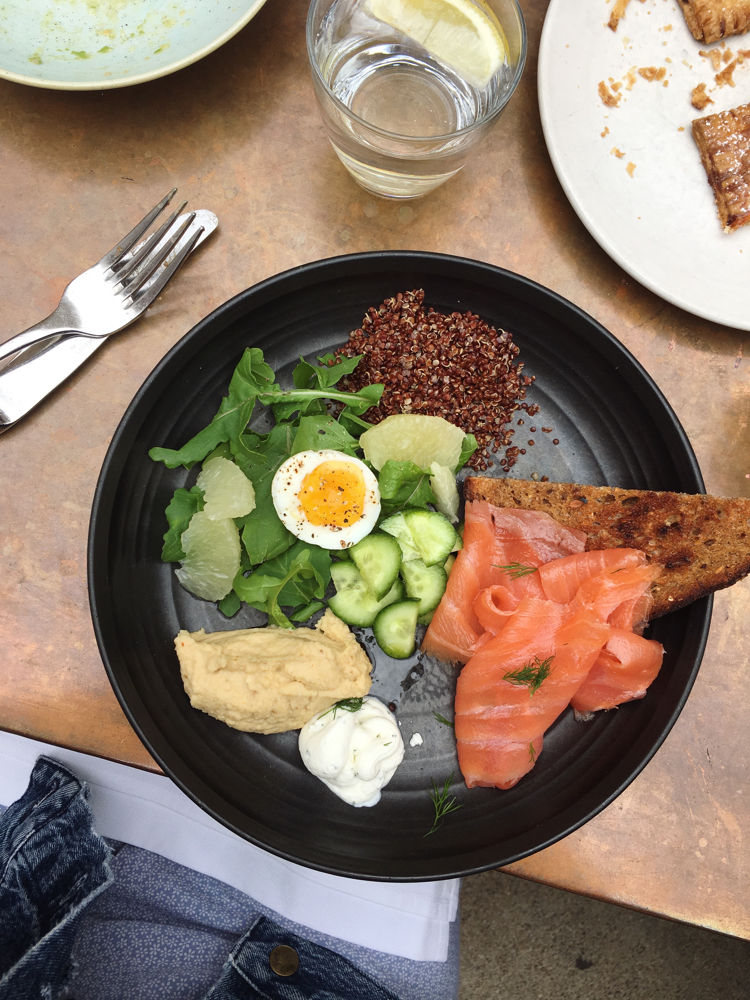
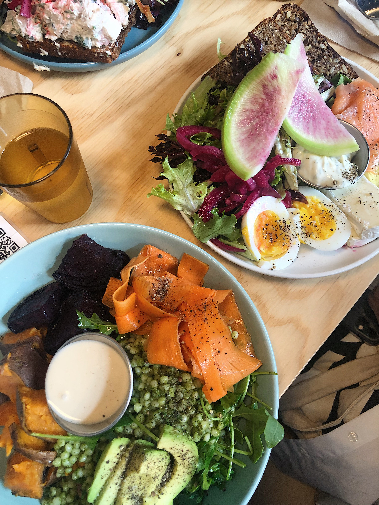
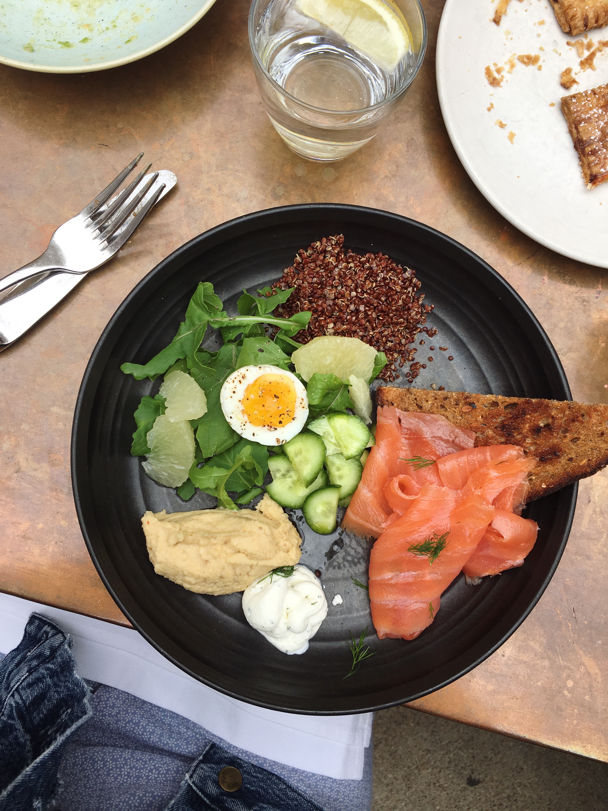
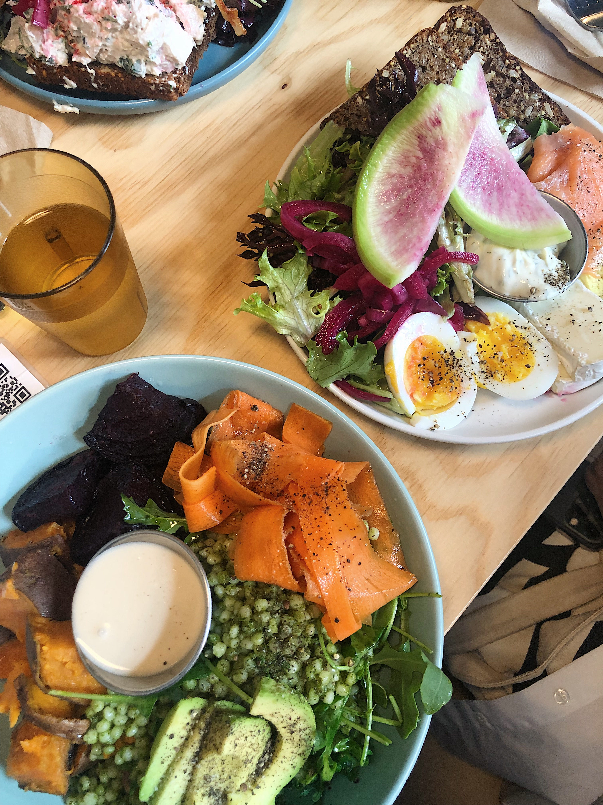

My Favorite Cuisines
My favorite dishes come primarily come from three regions of the world: Asia (specifically Southeast and East Asia), the Mediterranean, and Australia. Many of my favorite foods take a modernized approach and have ingredients or presentations inspired by traditional dishes that come from the cultures of these three regions.
Asian Food (Southeast Asian, East Asian, and Asian Pacific)
One of my favorite asian dishes to order from a restaurant is curry vermicelli noodles, a dish that originates from Singapore. The curry blend of peppercorns, cumin and turmeric paired with crisp bean sprouts garnished on top create a unique balance of textures.
A favorite Asian-inspired dish to make at home is poke bowls with salmon sashimi, avocado, edamame, cucumbers, and pickled ginger on a bed of rice. I love how the bowl brings out the natural flavors of fresh ingredients. Another dish I make often, especially in college, is teriyaki salmon bowls, which is essentially the ingredients of a poke bowl but cooked and prepared with a soy glaze.
When I am at a Japanese restaurant, I love to order oyakodon which is a dish with chicken, egg, and onion served over rice. The main flavor of the dish is dashi, which is a broth made from dried bonito flakes. I recently learned how to make this dish for myself after having bought a small bottle of dashi broth for myself!
A childhood favorite of mine and a tradition in my family during the colder months is hotpot. I grew up helping my mom wash vegetables —typically spinach, cabbage and an assortment of mushrooms—and arranging a sauce bar.

 

Mediterranean Food
I don't eat out often, but when I do, I get Mediterranean Food because it is my all-time favorite cuisine. A few favorite Mediterannean dishes of mine are: chicken shawarma bowls, hummus and pita, eggplant baba ganoush, and chickpea orzo salad.

Australian Food
You might be thinking...wait aren't avocado toast and brunch bowls with smoked salmon American-style breakfast? Actually, the trendy avocado toast, smoked salmon plate with eggs, and breakfast bowl varieties are inspired by the simple, yet nutritious Australian-style cafes menus. Australia's cafe culture is robust, and it seems that America has quickly adopted this with the establishment of Instagram-worthy cafes in the nation's largest cities.
 


